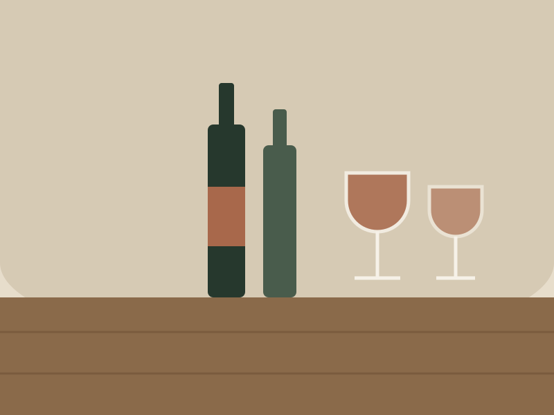

Enogastronomia
Degustazione in cantina
Otto chilometri da qui, una cantina di famiglia che lavora otto ettari. Si visitano la barricaia e i vigneti, poi si assaggiano cinque etichette: Tai rosso, Garganega, un rosso da invecchiamento e due che cambiano secondo l’annata. Con salumi e formaggi dei Berici.
Non è una degustazione da bus turistico: si va in gruppi di massimo otto persone e a raccontare è chi il vino lo fa.
| Durata | 2 ore |
|---|---|
| Periodo | Tutto l’anno, su prenotazione |
| Prezzo indicativo | 35 € a persona |
| Partner | Cantina Ai Filari (partner dimostrativo) |
| Prenotazione | Su richiesta, almeno 48 ore prima |
| Limiti | Minimo 2 persone. Chi guida assaggia e sputa, come si fa nelle degustazioni serie: oppure si prende il transfer. |